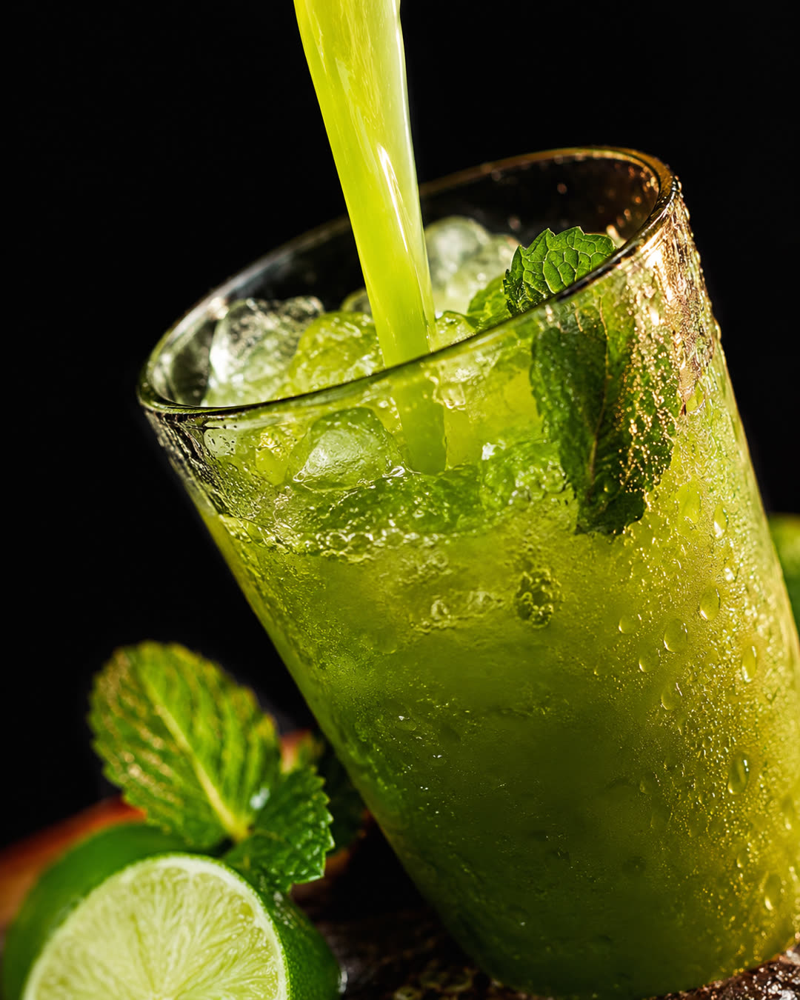
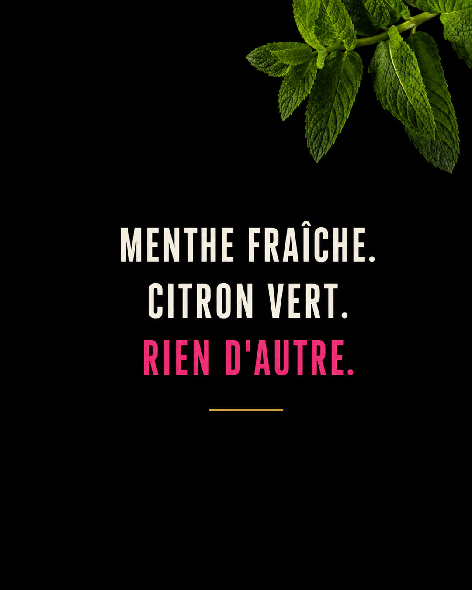
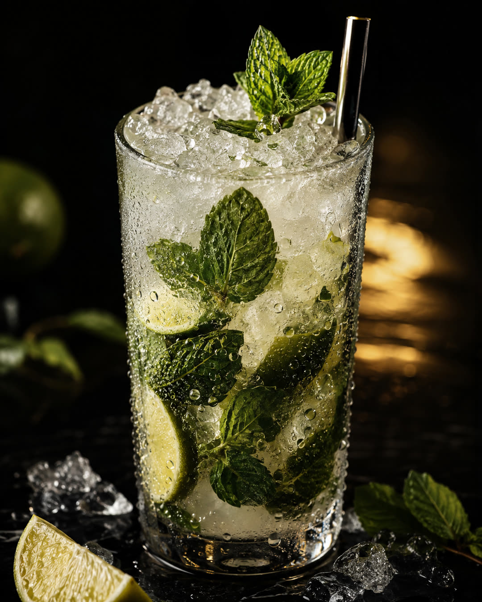
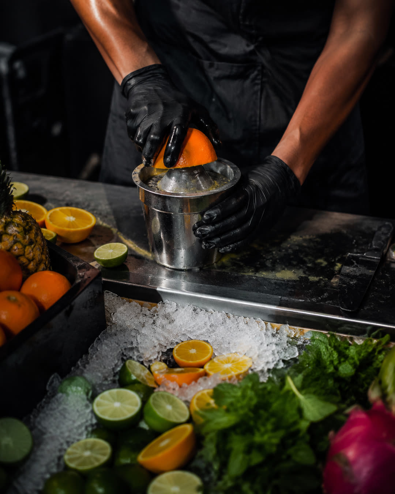
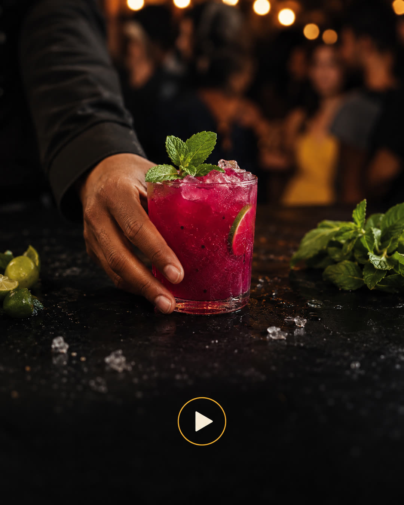
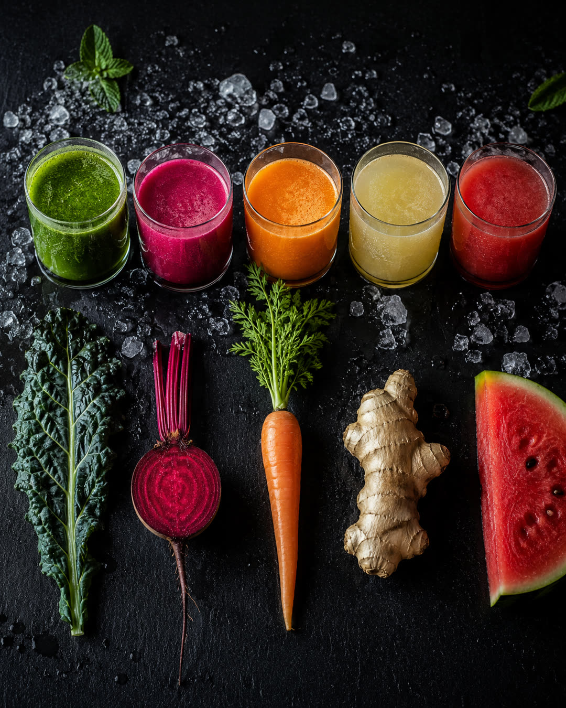
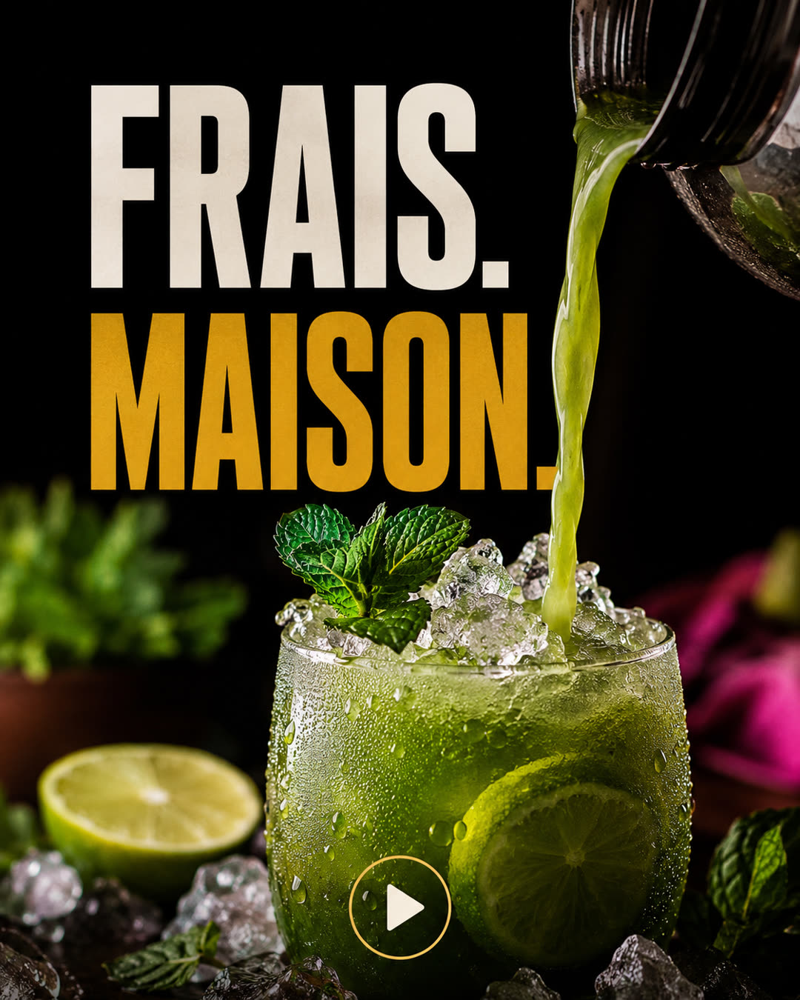
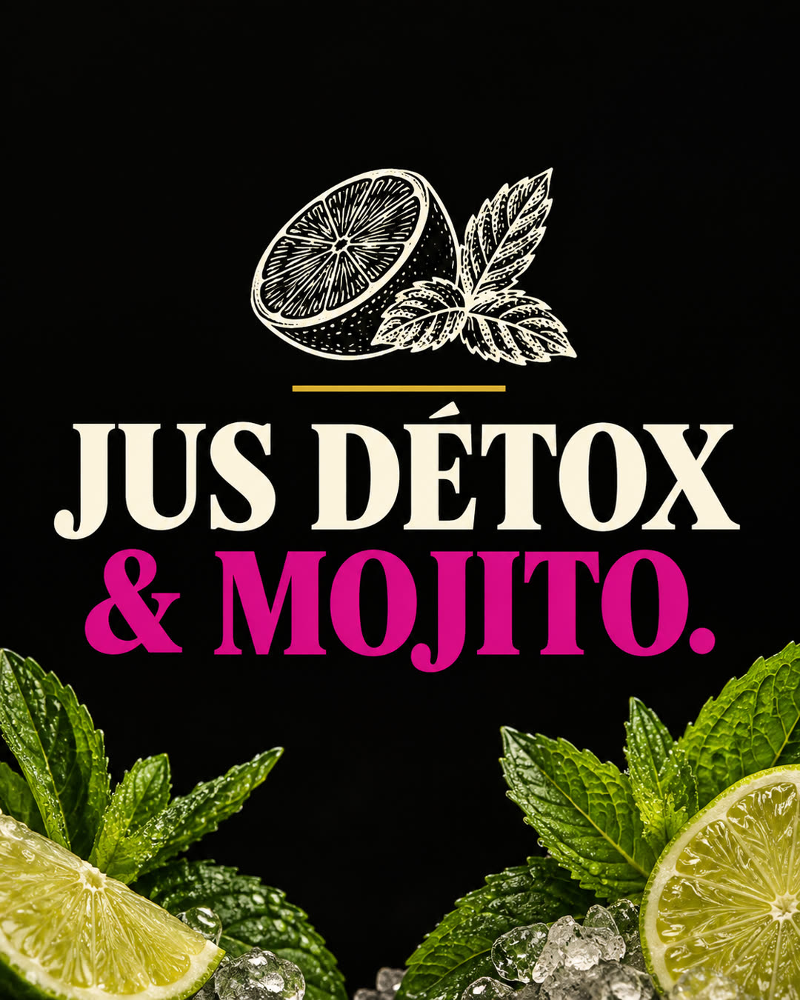

La recette du feed FoodBoost, appliquée à BeFresh. Leur charte, leur niche.








noir or #E0AE3A magenta #E9268C crème #F4EFE6
Elle vient de leur lookbook officiel, pas de mon goût. Une première série BeFresh avait été faite en vert et orange — c'était faux, et ça a coûté un lot d'images. On ne recommence pas.
| 1 · Produit | Le jus vert versé sur glace, macro, condensation. |
| 2 · Accroche | « Menthe fraîche. Citron vert. Rien d'autre. » — leurs propres mots. |
| 3 · Produit | Le mojito. C'est la porte d'entrée : tout le monde connaît le nom. |
| 4 · Coulisses | Les mains qui pressent. La preuve du « maison ». |
| 5 · Reel | Le service, en événement. |
| 6 · Ambiance | Le bar installé un soir d'événement. |
| 7 · Produit | La gamme détox, chaque jus avec son ingrédient brut. |
| 8 · Reel | « Frais. Maison. » |
| 9 · Marque | « Jus détox & mojito. » — leur niche, dite en trois mots. |
Aucun prix, aucun horaire, aucune adresse, aucun téléphone, aucun avis client, aucune date. Ce sont exactement les choses qu'un modèle invente sans qu'on le voie, et qu'un client découvrirait publiées à sa place.
Aucune bouteille d'alcool non plus : c'est écrit dans le prompt, pas laissé au hasard. Un mojito généré par défaut arrive avec du rhum à côté.
Neuf images GPT Image 2, 0,27 $ en tout. Le même montant que pour L'Unisson : la recette est un gabarit, pas un coup de chance.